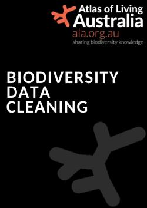

ALA Data Cleaning

Preface
Data cleaning is the exploration, detection and correction of data which may be errornous, unsuitably formatted, or otherwise unsuited for use in your project. The definition of ‘clean’ data therefore varies depending on the project and data sources, and as such there is no ‘one-size-fits-all’ approach. Nevertheless, there are some common processes and concepts that can be applied to many data cleaning workflows.
However, these processes typically require the use of a programming language, which can be a barrier of entry for many. Therefore, our goal in creating this resource is to assist researchers and decision makers that may have limited experience with cleaning geo-referenced biodiversity data. The language used will be R, which is commonly used in ecological projects, and has a rich ecosystem of packages for data cleaning.
In this book, we provide an overview of a typical data cleaning workflow - from acquisition, identifying potential errors, to correction. These processes are broken down into chapters, whithin each we include practical guidelines, example R code, and additional resources that may aid with each data cleaning step.
The content of this book was informed by the current state of biodiversity literature surrounding data preparation for species distribution modelling. For more details about how this was done, please refer to the Appendix. All resources that were used can be found in the References page.
Who is this book for?
- getting started and getting an overview of steps with examples
- quick reference
How to contribute
We would like to preface that we are not experts in data cleaning, but felt there was need for a consolidated resource to guide data cleaning decisions.
Contributions to this document are welcome. For any questions, feedback, or other issues, please open an issue on our GitHub repository. If you would like to make changes to the content of the website, you are welcome to submit a pull request containing your proposed changes. Please note, it is considered best practice to open an issue before working on a pull request, to allow discussion surrounding the proposed changes. Our contributing guidelines can be found here.
How to cite
You can cite this book as: Kar, F., Fenker, J., Schneider, M., Westgate, M. (2023). Cleaning biodiversity data in R. Retrieved Month dd, yyyy, from https://atlasoflivingaustralia.github.io/cleaning_data/
This book is available free to read, and is licenced under the Creative Commons Attribution-NonCommercial-ShareAlike 4.0 International License
Acknowledgements
This book was inspired by an Australian Research Data Commons project where our team worked closely with research partners to streamline their data cleaning workflows. This book is a collaborative effort from the Science and Decision Support team at the Atlas of Living Australia (ALA)
Authors listed in alphabetic order: - Fonti Kar - Jessica Fenker - Margot Schneider - Martin Westgate
- TODO:
- the preface or somewhere should have a little background on who, why, types of research etc. The title is also just data cleaning perhaps need more specific